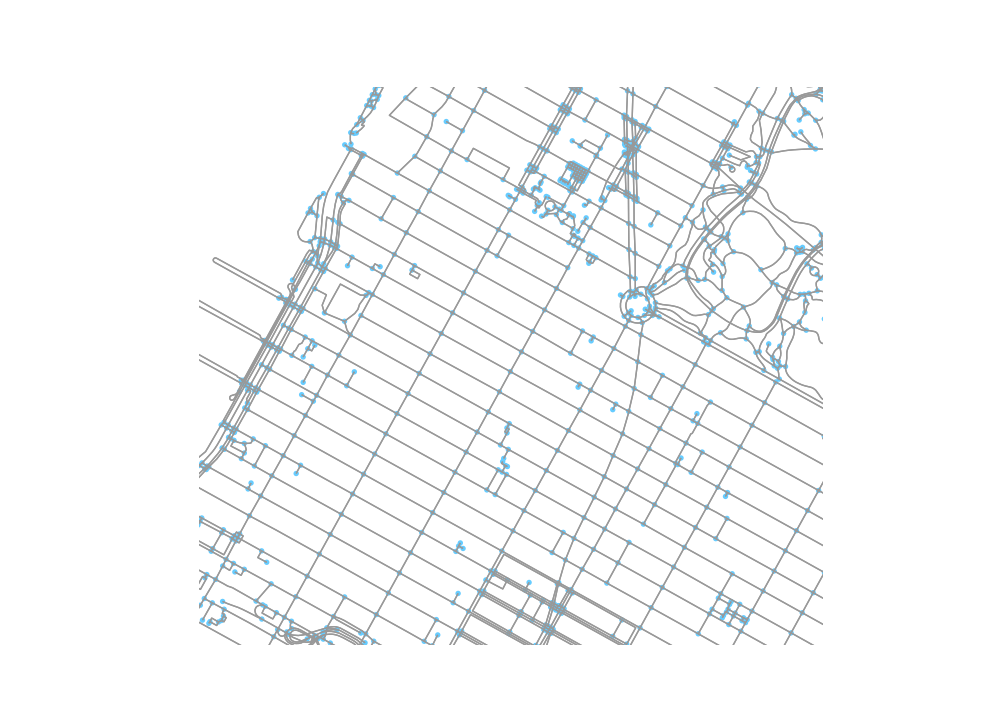

We want to calculate network-based distances between blocks in New York City and the edges of parks. In this document, we do the following:
To do this, we are going to use the osmnx library for python.
The python calculations in this page are illustrations of the methods performed; the code is not actually literate as the computations do not complete in a reasonable amount of time. The actual python script is in py/park_distances.py
import osmnx as ox
import networkx as nx
import numpy as np
import pandas as pd
import time
import pickleWe use the osmnx library to get a highway network graph for New York City from OpenStreetMap. We get the walk network because most people in New York City will not be driving to get to their park. We then project the network into UTM 17N so that all paths will return in meters.
def get_graph(place, mode, crs):
"""
Get a graph for the place and write both the original graph and the projected directed
graph to file
:param place:
:param mode: One of "drive", "walk", etc.
:return: OSMNX projected graph
"""
# Get the graph and make it a non multigraph
graph = ox.graph_from_place(place, network_type=mode)
# write to file
with open("data/graph.file", "wb") as f:
pickle.dump(graph, f)
# project to UTM zone 18 N and simplify
graph_proj = ox.project_graph(graph, to_crs=crs)
graph_proj = nx.DiGraph(graph_proj)
with open("data/graph_proj.file", "wb") as f:
pickle.dump(graph_proj, f)
return graph_projAn image of this graph is shown below, zoomed in on Midtown Manhattan / Columbus Circle.
knitr::include_graphics("figs/nyc_network_columbus_circle.png")
The tract and socioeconomic information is provided at the tract level, but we can calculate the accessibility at the block group level. We get a list of population-weighted block group centroids from Census, and transform them into UTM17N coordinates.
# get the coordinates from census
url = "https://www2.census.gov/geo/docs/reference/cenpop2010/blkgrp/CenPop2010_Mean_BG36.txt"
bg <- read_csv(url, col_types = list(
STATEFP = col_character(),
COUNTYFP = col_character(),
TRACTCE = col_character(),
BLKGRPCE = col_character()
)) %>%
filter(COUNTYFP %in% c("081", "047", "061", "005", "085")) %>%
transmute(GEOID = str_c(STATEFP, COUNTYFP, TRACTCE, BLKGRPCE),
LATITUDE, LONGITUDE) %>%
st_as_sf(coords = c("LONGITUDE", "LATITUDE"), crs = 4326) %>%
st_transform(32618) %>%
mutate(
LONGITUDE = st_coordinates(.)[, 1],
LATITUDE = st_coordinates(.)[,2]
) %>%
st_set_geometry(NULL) %>%
as_tibble() %>%
write_csv("data/blockgroups_nonode.csv")We want to calculate distance from the block group centroid to the nearest edge of each open space. The open spaces data created on the previous page is a detailed simple features layer with a polygon for each open space. The osmnx graph needs to have point coordinates to calculate network-based distances, however. To make this work, we
# get open spaces file
open_spaces <- read_rds("data/open_spaces.rds") %>%
select(id) %>%
# some polygons are way too detailed, so we want to simplify to 100 foot resolution
st_simplify(dTolerance = 100, preserveTopology = TRUE)
# some parks have multiple polygons. We need these to be simpler individual features
poly_from_multi <- open_spaces %>%
filter(st_geometry_type(geometry) == "MULTIPOLYGON") %>%
st_cast("POLYGON")## Warning in st_cast.sf(., "POLYGON"): repeating attributes for all sub-
## geometries for which they may not be constantlinestrings <- open_spaces %>%
# join the original polygons back with the simplified multipolygons
filter(st_geometry_type(geometry) != "MULTIPOLYGON") %>%
rbind(poly_from_multi) %>%
# cast the polygons to a linestring of the park perimeter
st_cast("LINESTRING", group_or_split = TRUE) ## Warning in st_cast.sf(., "LINESTRING", group_or_split = TRUE): repeating
## attributes for all sub-geometries for which they may not be constantpoint_samples <- linestrings %>%
# sample points along the line, one point per 1000 feet.
st_line_sample(density = 1/1000)
# append open space id
open_space_points <- tibble(id = linestrings$id, geometry = point_samples) %>%
st_as_sf() %>%
st_cast(to = "POINT")## Warning in st_cast.sf(., to = "POINT"): repeating attributes for all sub-
## geometries for which they may not be constantThe results of this data munging are given below. We have some issues where parks made of multiple polygons end up with internal points. Trying to get rid of these by using complex hulls created other problems on linear parks. So we’ll just go with this.
leaflet() %>%
addProviderTiles(providers$OpenStreetMap) %>%
addCircleMarkers(data = open_space_points %>% st_transform(4326), radius = 0.001,
color = "red") %>%
addPolygons(data = open_spaces %>% st_transform(4326))Now, we transform the points into UTM Zone 17N.
park_points <- open_space_points %>%
st_transform(32618) %>%
mutate(
LONGITUDE = st_coordinates(.)[, 1],
LATITUDE = st_coordinates(.)[,2]
) %>%
st_set_geometry(NULL) %>%
as_tibble()
write_csv(park_points, "data/park_points_nonode.csv")In order to calculate the distances between the block group centroids and the park edge points, we need to look up the nearest point on the network to each point. First, we bring the park points we sampled into a pandas data frame with the park id as the index.
def find_node(df):
"""
Function to find the nearest node in a network to lat,long columns in data frame
:param df: Pandas data frame with lat, long information
"""
with open("data/graph_proj.file", "rb") as f:
graph = pickle.load(f)
df['node'] = df.apply(lambda row:
ox.get_nearest_node(graph, (row.LATITUDE, row.LONGITUDE)), axis=1)
return dfNow we get the shortest paths. The network is quite large with 122,794 nodes and 381,656 edges. We also have 6494 and 6925, meaning we need to find 44970950 shortest paths. Even on my beefy computer this can cause some problems. So we use the Euclidean distance if over 3.5 km, and only get the shortest paths for points less than 3.5km away.
# loop through block groups
def get_shortest_paths(df):
"""
:param df:
"""
# get graph information
print("Getting graph information")
with open("data/graph_proj.file", "rb") as f:
graph = pickle.load(f)
# output file
write_file = "data/shortest_paths_" + str(os.getpid()) + ".csv"
f = open(write_file, "w+")
f.write("geoid, park_id, distance\n")
for bg in df.itertuples():
# loop through parks
for park in park_ids:
these_points = park_points.loc[[park]]
# loop through points
min_dist = float("inf")
min_euc = float("inf")
for point in these_points.itertuples():
# check euclidean distance
dx = point.LONGITUDE - bg.LONGITUDE
dy = point.LATITUDE - bg.LATITUDE
euc_dist = math.sqrt(dx**2 + dy**2)
# if the Euclidean distance is more than 3500 meters, we will just use that
if euc_dist > 3500:
if euc_dist < min_euc:
min_euc = euc_dist
break
# If it's within 3500m Euclidean, then we will get the network distance
try:
length = nx.shortest_path_length(graph, source=bg.node, target=point.node, weight='length')
except: # unless there is no path
length = float("inf")
# check if this is the shortest one we've found; if so, update.
if length < min_dist:
min_dist = length
# write out the length between the block group and this park
used_distance = min(min_dist, min_euc)
f.write(str(bg.Index) + ", " + str(park) + ", " + str(used_distance) + "\n")
# close the buffer
f.close()